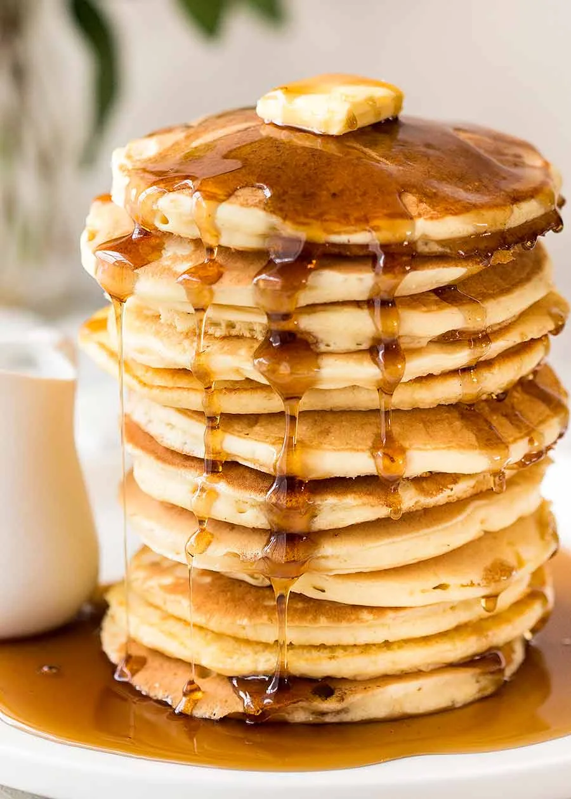

Pancakes

Description
These pancakes are light, airy, and perfect for a weekend breakfast. Top with your favorite syrup, fruit, or whipped cream for a delightful treat!
Ingredients
- 1 1/2 cups all-purpose flour
- 3 1/2 teaspoons baking powder
- 1/4 teaspoon salt
- 1 tablespoon white sugar
- 1 1/4 cups milk
- 1 egg
- 3 tablespoons melted butter
Steps
- In a large bowl, whisk together the flour, baking powder, salt, and sugar.
- Make a well in the center and pour in the milk, egg, and melted butter; mix until smooth.
- Heat a lightly oiled griddle or frying pan over medium-high heat.
- Pour or scoop the batter onto the hot griddle, using approximately 1/4 cup for each pancake.
- Cook until bubbles form and the edges are dry, about 2-3 minutes.
- Flip and cook until golden brown on the other side, about 2 minutes more.
- Serve immediately with your favorite toppings.
Home